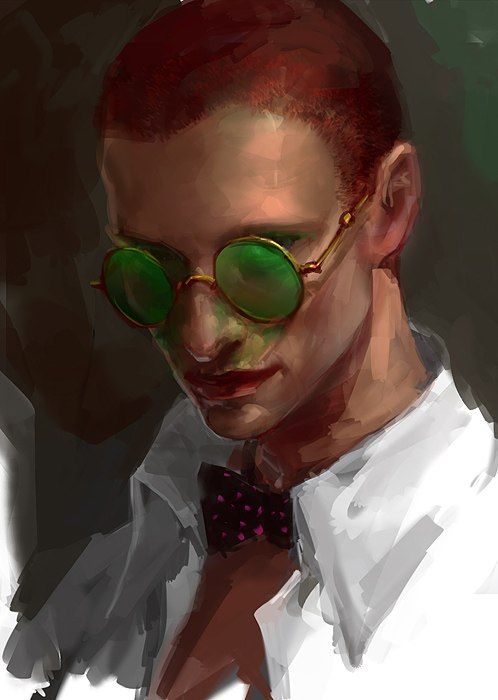

Рудий : ватажок крис
Рудий є ватажком крис ( Другой групи) на момент основних подій . Здоров я : має проплеми із зпиною тому нолзить гшпсовий корсет . Характер : у даношго персоажа нахальний, безстидний Характер. самий головний момент в повісті с ним : Пережив замах під час самой довгої , організований Соломоном,Фітілем та Доном
